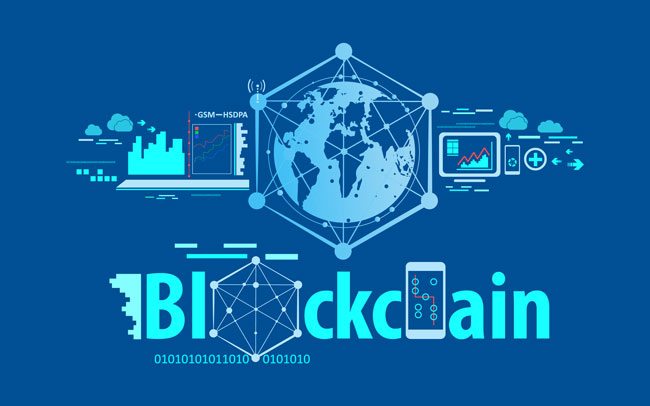

ปกติแล้วการโอนเงินระหว่างประเทศที่มีสกุลเงินแตกต่างกันเราคงหลีกเลี่ยงไม่ได้ที่ต้องทำธุรกรรมผ่านธนาคารตัวกลาง (Intermediary Bank) ซึ่งใช้เวลาดำเนินการค่อนข้างนาน เพื่อให้เกิดความถูกต้องและปลอดภัย แต่สำหรับในยุคดิจิทัล การโอนเงินระหว่างประเทศกำลังจะเปลี่ยนไปในทิศทางที่ดีและสะดวกขึ้น ด้วยเทคโนโลยี Blockchainนวัตกรรมที่เข้ามาตอบโจทย์คนยุคใหม่ในเรื่องความง่ายและรวดเร็วในการทำธุรกรรมผ่านระบบออนไลน์เพียงไม่กี่วินาที แม้จะไม่มีธนาคารตัวกลางแต่ยังคงความปลอดภัยเหมือนเดิม และไม่ต้องเสียค่าธรรมเนียมจำนวนมากอย่างแต่ก่อน ดังนั้น การใช้ Blockchain ในไทยน่าจะเป็นทางเลือกใหม่ที่จะช่วยขับเคลื่อนภาคธุรกิจยุคดิจิทัลได้ดีอย่างยิ่งครับ
